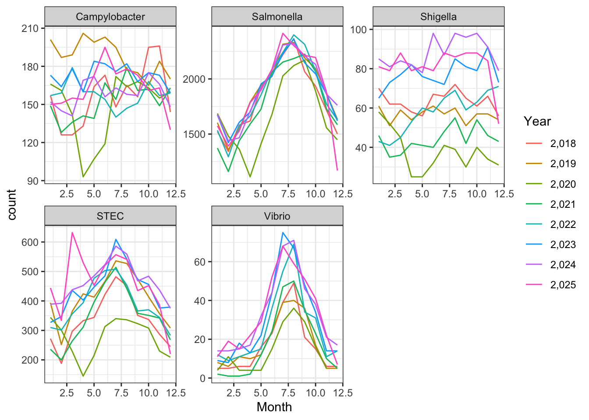
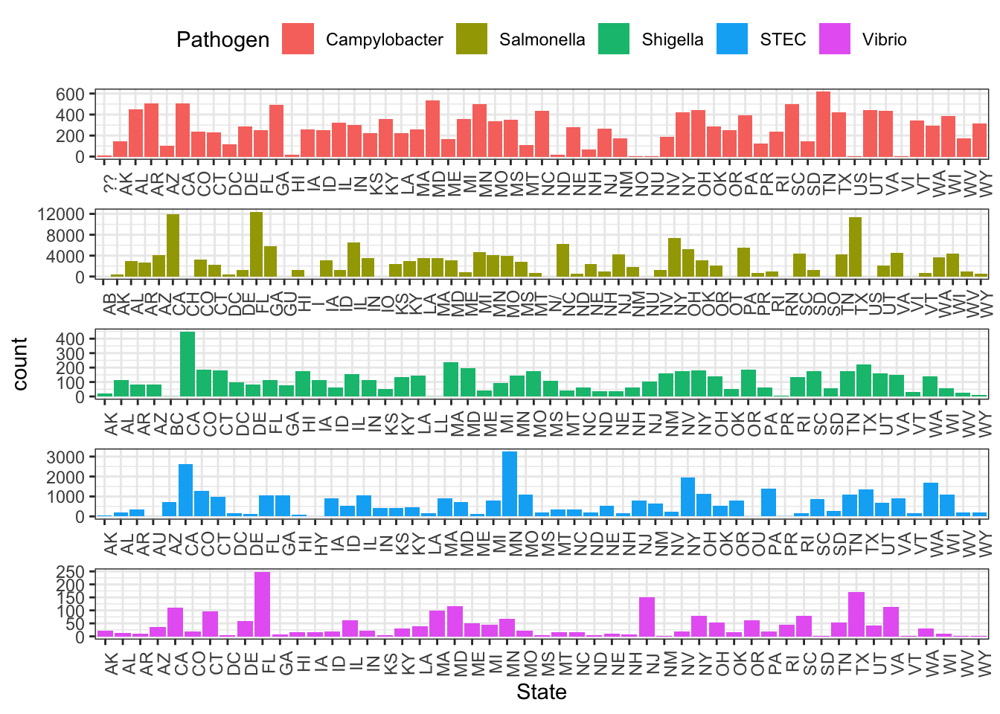
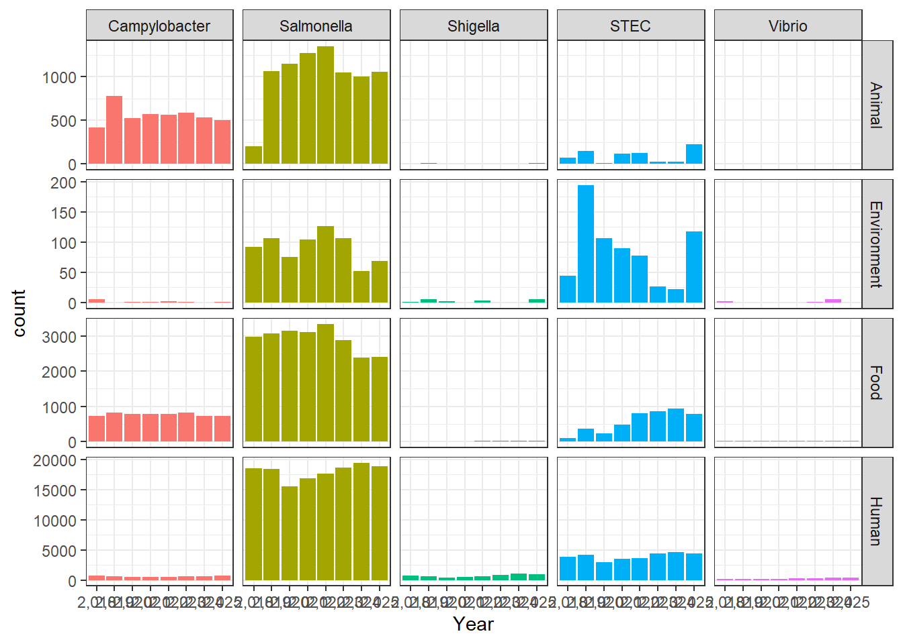
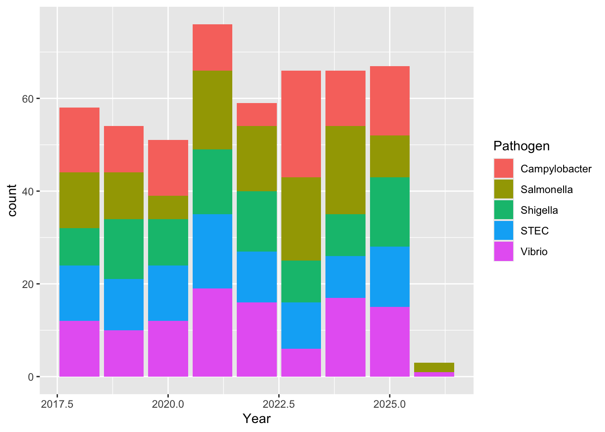
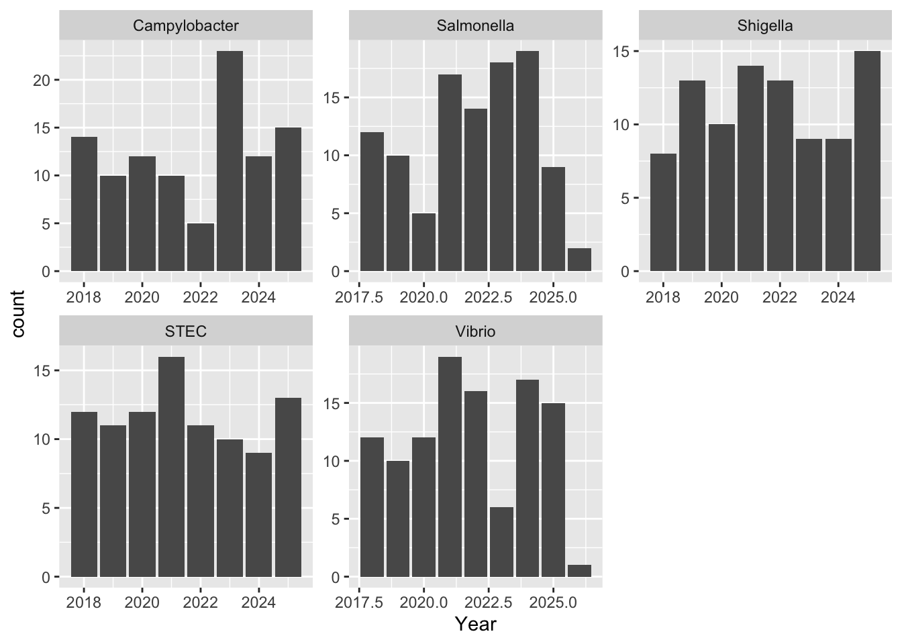
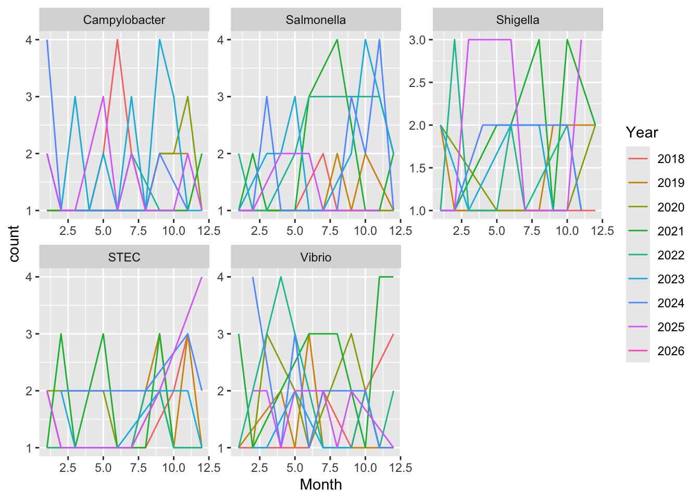
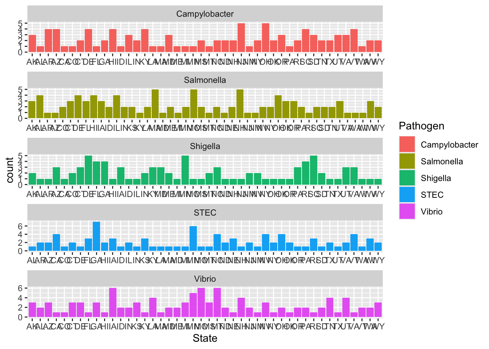
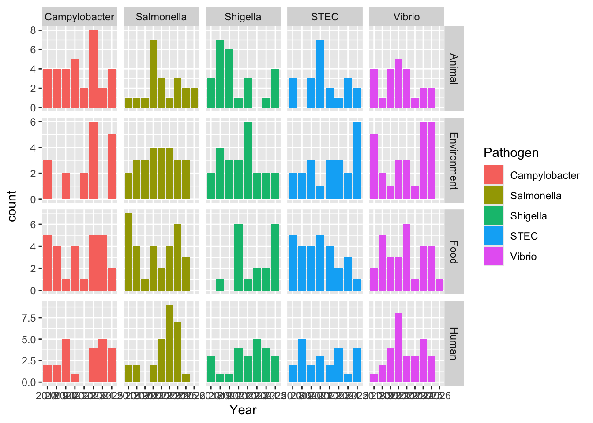

library(here)here() starts at /Users/elleadams/marcoreina-portafoliocdcdata <- read.csv(here("cdcdata-exercise", "BEAM_Dashboard_-_Report_Data_20260211.csv"))The BEAM (Bacteria, Enterics, Amoeba, and Mycotics) Dashboard is an interactive tool to access and visualize data from the System for Enteric Disease Response, Investigation, and Coordination (SEDRIC). The BEAM Dashboard provides timely data on pathogen trends and serotype details to inform work to prevent illnesses from food and animal contact. Last updated: January 20, 2026 Data provided by the Division of Foodborne, Waterborne, and Environmental Diseases (DFWED)
License Public Domain U.S. Government Source Link https://www.usa.gov/government-works
library(here)here() starts at /Users/elleadams/marcoreina-portafoliocdcdata <- read.csv(here("cdcdata-exercise", "BEAM_Dashboard_-_Report_Data_20260211.csv"))# get an overview of data structure
str(cdcdata)'data.frame': 237493 obs. of 13 variables:
$ Year : chr "2,025" "2,025" "2,025" "2,025" ...
$ Month : int 1 1 1 1 1 1 1 1 1 1 ...
$ State : chr "AL" "AL" "AL" "AL" ...
$ Source.Type : chr "Animal" "Animal" "Food" "Food" ...
$ Source.Site : chr "Other" "Other" "Other" "Other" ...
$ Pathogen : chr "Campylobacter" "Campylobacter" "Campylobacter" "Campylobacter" ...
$ Serotype.Species : chr "coli" "jejuni" "coli" "jejuni" ...
$ Number.of.isolates : int 3 1 18 11 4 2 1 11 4 8 ...
$ Outbreak.associated.isolates : int NA NA NA NA NA NA NA NA NA NA ...
$ New.multistate.outbreaks : int NA NA NA NA NA NA NA NA NA NA ...
$ New.multistate.outbreaks...US : int NA NA NA NA NA NA NA NA NA NA ...
$ X..Isolates.with.clinically.important.antimicrobial.resistance: int NA NA NA NA NA NA NA NA NA NA ...
$ Number.of.sequenced.isolates.analyzed.by.NARMS : int NA NA NA NA NA NA NA NA NA NA ...# get a summary of data
summary(cdcdata) Year Month State Source.Type
Length:237493 Min. : 1.000 Length:237493 Length:237493
Class :character 1st Qu.: 4.000 Class :character Class :character
Mode :character Median : 7.000 Mode :character Mode :character
Mean : 6.717
3rd Qu.: 9.000
Max. :12.000
Source.Site Pathogen Serotype.Species Number.of.isolates
Length:237493 Length:237493 Length:237493 Min. : 1.000
Class :character Class :character Class :character 1st Qu.: 1.000
Mode :character Mode :character Mode :character Median : 1.000
Mean : 2.633
3rd Qu.: 2.000
Max. :283.000
Outbreak.associated.isolates New.multistate.outbreaks
Min. : 1.000 Min. :1.000
1st Qu.: 1.000 1st Qu.:1.000
Median : 1.000 Median :1.000
Mean : 2.242 Mean :1.086
3rd Qu.: 2.000 3rd Qu.:1.000
Max. :210.000 Max. :6.000
NA's :217332 NA's :227612
New.multistate.outbreaks...US
Min. :1.000
1st Qu.:1.000
Median :1.000
Mean :1.026
3rd Qu.:1.000
Max. :4.000
NA's :236234
X..Isolates.with.clinically.important.antimicrobial.resistance
Min. : 1.000
1st Qu.: 1.000
Median : 1.000
Mean : 2.834
3rd Qu.: 2.000
Max. :109.000
NA's :235384
Number.of.sequenced.isolates.analyzed.by.NARMS
Min. : 1.000
1st Qu.: 1.000
Median : 1.000
Mean : 2.244
3rd Qu.: 2.000
Max. :206.000
NA's :229830 #step 1 removing mostly empty columns
cdcdata_1 <- subset(cdcdata, select = -c(Outbreak.associated.isolates, New.multistate.outbreaks, New.multistate.outbreaks...US, X..Isolates.with.clinically.important.antimicrobial.resistance, Number.of.sequenced.isolates.analyzed.by.NARMS))
#step 2 dropping NA values
cdcdata_2 <- na.omit(cdcdata_1)# get an overview of data structure
str(cdcdata_2)'data.frame': 237486 obs. of 8 variables:
$ Year : chr "2,025" "2,025" "2,025" "2,025" ...
$ Month : int 1 1 1 1 1 1 1 1 1 1 ...
$ State : chr "AL" "AL" "AL" "AL" ...
$ Source.Type : chr "Animal" "Animal" "Food" "Food" ...
$ Source.Site : chr "Other" "Other" "Other" "Other" ...
$ Pathogen : chr "Campylobacter" "Campylobacter" "Campylobacter" "Campylobacter" ...
$ Serotype.Species : chr "coli" "jejuni" "coli" "jejuni" ...
$ Number.of.isolates: int 3 1 18 11 4 2 1 11 4 8 ...
- attr(*, "na.action")= 'omit' Named int [1:7] 44698 61352 61353 64636 79510 79511 80672
..- attr(*, "names")= chr [1:7] "44698" "61352" "61353" "64636" ...# get a summary of data
summary(cdcdata_2) Year Month State Source.Type
Length:237486 Min. : 1.000 Length:237486 Length:237486
Class :character 1st Qu.: 4.000 Class :character Class :character
Mode :character Median : 7.000 Mode :character Mode :character
Mean : 6.717
3rd Qu.: 9.000
Max. :12.000
Source.Site Pathogen Serotype.Species Number.of.isolates
Length:237486 Length:237486 Length:237486 Min. : 1.000
Class :character Class :character Class :character 1st Qu.: 1.000
Mode :character Mode :character Mode :character Median : 1.000
Mean : 2.633
3rd Qu.: 2.000
Max. :283.000 library(ggplot2)Warning: package 'ggplot2' was built under R version 4.5.2ggplot(cdcdata_2, aes(x = Year, fill = Pathogen)) + geom_bar() + theme_bw()
ggplot(cdcdata_2, aes(x = Year)) + geom_bar(fill ="lightblue3") + theme_bw() + facet_wrap( ~ Pathogen, scales = "free")
ggplot(cdcdata_2, aes(x = Month, color = Year)) + geom_line(stat = "count") + theme_bw() + facet_wrap( ~ Pathogen, scales = "free")
ggplot(cdcdata_2, aes(x = State, fill = Pathogen)) + geom_bar() + theme_bw() + facet_wrap(~ Pathogen, ncol = 1, scales = "free") + theme(axis.text.x = element_text(angle = 90), strip.text.x = element_blank(), legend.position = "top") 
ggplot(cdcdata_2, aes(x = Year, fill = Pathogen)) + geom_bar() + theme_bw() + facet_grid(Source.Type ~ Pathogen, scales = "free") + theme(legend.position = "none")
Start with loading necessary packages
library(dplyr)
Attaching package: 'dplyr'The following objects are masked from 'package:stats':
filter, lagThe following objects are masked from 'package:base':
intersect, setdiff, setequal, unionlibrary(tidyverse)Warning: package 'purrr' was built under R version 4.5.2Warning: package 'lubridate' was built under R version 4.5.2── Attaching core tidyverse packages ──────────────────────── tidyverse 2.0.0 ──
✔ forcats 1.0.0 ✔ stringr 1.5.1
✔ lubridate 1.9.5 ✔ tibble 3.3.0
✔ purrr 1.2.1 ✔ tidyr 1.3.1
✔ readr 2.1.5 ── Conflicts ────────────────────────────────────────── tidyverse_conflicts() ──
✖ dplyr::filter() masks stats::filter()
✖ dplyr::lag() masks stats::lag()
ℹ Use the conflicted package (<http://conflicted.r-lib.org/>) to force all conflicts to become errorslibrary(purrr)
library(ggplot2)
library(lubridate)Generating synthetic data, following outline from week 4B class content.
#Set seed for reproducibility
set.seed(123)
#Number of observations to generate. The BEAM data had over 200,000 rows. I do not need the synthetic data to have this many, I will start with 500 to see how it goes.
n_obs <- 500
#Creating empty dataframe with placeholders
syn_data <- data.frame(Year = character(n_obs), Month = integer(n_obs), State = character(n_obs), Source.Type = character(n_obs), Source.Site = character(n_obs), Pathogen = character(n_obs), Serotype.Species = character(n_obs), Number.of.isolates = integer(n_obs))
#Variable 1: Year
start_date <- ymd("2018-01-01")
end_date <- ymd("2026-02-12")
random_dates <- sample(seq(start_date, end_date, by = "day"), n_obs, replace = TRUE)
syn_data$Year <- year(random_dates)
#Variable 2: Month
syn_data$Month <- month(random_dates)
#Variable 3: State - after some online searching, there seems to be a number of ways to do this, least to most accurate, I think since I did the dates truly just random, I will do the same for the states.
syn_data$State <- sample(state.abb, n_obs, replace = TRUE)
#Variable 4: Source.Type - start by identifying possible answers for the source type in the original dataset to use to populate synthetic dataset
unique(cdcdata_2$Source.Type)[1] "Animal" "Food" "Human" "Environment"syn_data$Source.Type <- map_chr(sample(c("Human", "Animal", "Food", "Environment"), n_obs, replace = TRUE), as.character)
#Variable 5: Source.Site - same process as variable 4
unique(cdcdata_2$Source.Site)[1] "Other" "Stool" "Blood" "Urine"syn_data$Source.Site <- map_chr(sample(c("Stool", "Urine", "Blood", "Other"), n_obs, replace = TRUE), as.character)
#Variable 6: Pathogen - same process as variables 4 & 5 - ran into trouble and wouldn't populate the column like the previous ones did, googling said I don't actually need the map_chr function.
unique(cdcdata_2$Pathogen)[1] "Campylobacter" "STEC" "Salmonella" "Shigella"
[5] "Vibrio" syn_data$Pathogen <- sample(c("Campylobacter", "STEC", "Salmonella", "Shigella", "Vibrio"), n_obs, replace = TRUE)
#Variable 7: Serotype.Species - this one is different since it depends on varaible 6 - counting the number of combinations to start
combo_count <- cdcdata_2 %>% count(Pathogen, Serotype.Species)
###That's a lot, too many to type individually. Let's try this:
serotypes <- cdcdata_2 %>% distinct(Pathogen, Serotype.Species) %>% group_by(Pathogen) %>% summarise(Serotypes = list(Serotype.Species))
###Asked ChatGPT for help with this joining step
syn_data <- syn_data %>% left_join(serotypes, by = "Pathogen") %>% rowwise() %>% mutate(Serotype.Species = sample(Serotypes, 1)) %>% ungroup() %>% select(-Serotypes)
#Variable 8: Number.of.isolates - making it between the max and min from the original datset
max(cdcdata_2$Number.of.isolates)[1] 283min(cdcdata_2$Number.of.isolates)[1] 1syn_data$Number.of.isolates <- round(runif(n_obs, min = 1, max = 283), 1)
#Check out the dataframe
head(syn_data)# A tibble: 6 × 8
Year Month State Source.Type Source.Site Pathogen Serotype.Species
<dbl> <dbl> <chr> <chr> <chr> <chr> <chr>
1 2024 9 AZ Human Urine Shigella Shigella dysenteriae
2 2024 11 NC Human Blood Shigella Shigella boydii
3 2024 2 NJ Environment Urine STEC :H18
4 2019 6 ND Food Blood Vibrio vulnificus/Missing
5 2018 7 AK Human Other Vibrio cholerae/O1/Ctx-
6 2023 1 SC Animal Stool Campylobacter coli
# ℹ 1 more variable: Number.of.isolates <dbl>Okay, that was more work than I expected, but now the synthetic dataframe exists and is filled.
Now to explore the data
#Following Marco's lead, number of isolates per year - The first one is a stacked bar graph for total isolates, colored by which pathogen. The second is separate graphs for each pathogen, showing the number of isolates for it each year.
ggplot(syn_data, aes(x = Year, fill = Pathogen)) +
geom_bar()
ggplot(syn_data, aes(x = Year)) +
geom_bar() +
facet_wrap( ~ Pathogen, scales = "free")
For the stacked bar graph, the real data shows dominance by Salmonella species, whereas the synthetic data is much more evenly distributed. For the individual bar graphs, because I made the sclaes so different it is hard to tell proportionally how different the two are in terms of nnumber of isolates. But based on the first graph, I doubt thye are very similar at all.
#Next Marco did trends by month
syn_data$Year <- as.character(syn_data$Year)
ggplot(syn_data, aes(x = Month, color = Year)) +
geom_line(stat = "count") +
facet_wrap( ~ Pathogen, scales = "free")
Wow this is all over the place, again probably because it’s just random, I didn’t tell it anything about real world trends and populations (I don’t know how I would do this).
#Next was comparing pathogens per state
ggplot(syn_data, aes(x = State, fill = Pathogen)) +
geom_bar() +
facet_wrap(~ Pathogen, ncol = 1, scales = "free")
Random, again, of course.
#Last was source type
ggplot(syn_data, aes(x = Year, fill = Pathogen)) +
geom_bar() +
facet_grid(Source.Type ~ Pathogen, scales = "free")
Very different from the real data, likely due to seasonal trends, and bacterial behavior(like where they are often found, etc) that I didn’t tell the code to account for. Again, I don’t even know how one would do this. For a random sampling it honestly looks like they sampled among the 5 possible pathogens fairly evenly, which I guess it could look more like that since I told it to do 500 samples.